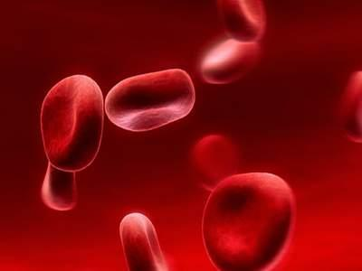

中医养生
中医养生指通过各种方法颐养生命、增强体质、预防疾病,从而达到延年益寿的一种医事活动。
可以说一个人健康与否很容易的通过脸色就能判定，要知道，其实“脸色”也是身体的一面镜子，可以直观反映出你的健康状态。为什么有些人的脸色看上去会发白、发黄或发黑呢?其实不同的脸色暗示着不同的疾病，快来看看你是属于哪种脸色吧。
1、白：苍白、煞白、惨白
我们都知道，正常的脸色应该是白里透红、明润有泽。可有些人的脸色却呈现出苍白、煞白甚至惨白的状况，且没有脸色毫无光泽，这是为什么呢?中医认为，这种 白色多跟气虚、血虚有关。血液不足，不能营养面部，则易出现脸色发白的现象，此外，气为血之率，血为气之母，所以补血的同时要先补气，气能生血，而且血液 的化生离不开气作为动力。若气虚了，脸色也易出现苍白色。
脸色发白怎么办？
如果发现自己脸色发白，不妨多吃像黑木耳、大枣、桂圆、猪肝等。平时注意休息，不宜过于劳累。如果体内有寒气，可以用适量的花椒煮成水后泡脚，对于温散寒邪，具有很好的作用。
2、黄：蜡黄、焦黄
还有一些人的脸色比较容易出现蜡黄、焦黄的情况，有可能你已经出现了脾胃虚弱。中医认为脾胃是先天之本，是营养物质的来源，如果脾胃虚弱以后不能正常运化，营养物质就不能滋润到我们的面部，故而脸色会出现黄色。
脸色发黄怎么办？
如果发现自己脸色发黄，则可以多吃一些具有健脾胃功能的食物，比如薏米、百合、山药、黄鱼、小米、人参等。祛湿的有薏仁、红豆、冬瓜皮及荷叶、莲子等。此外，为了保护脾胃，在生病时要要少吃牛黄解毒片、牛黄上清丸等苦寒类药物。
3、红：通红、潮红
脸色发红并不代表都是健康的体现，有一种“红”和疾病有关，那就是脸色潮红。比如有些人一到下午的时候就会出现脸色发红的现象，其实脸色潮红和阴虚、上火有关。容易表现出心情烦躁、两手心发热等症状。脸色发红也分两种情况，如果是满面通红，则说明上的火为“实为”;如果发现只是颧骨发红，则说明上的火为 “虚火”，需要对症治疗。
脸色发红怎么办？
如果发现自己脸色发红，则具有清凉作用的瓜果是首选，比如山竹、柚子、柠檬、梨、绿豆、西瓜、黄瓜等。此外，一些滋阴的食物也不能错过，比如芝麻、银耳、糯米、海参、海蜇、牛奶、猪皮等，可以缓和情绪，改善面色。
4、 黑：枯萎、憔悴
我们都知道，中国人的肤色属于“黄皮肤”，但是有一些人的脸色却是黄里面透着黑色，整个人看上去也无精打采，更且看上去好像比实际年龄还要老上几岁，如果 呈现这种脸色的话，则说明你出现肾虚了。中医认为五色对应五脏，黑是跟肾相对应，所以说肾虚的病人往往多见黑面色。黑眼圈也属面色发黑，它就是因为肾虚导致水代谢异常造成的。
脸色发黑怎么办？
如果发现自己脸色发黑，则不妨多吃一些具有补肾温阳功效的食物，比如羊肉、当归、韭菜、虾、核桃、鸡蛋、枸杞子等。
舌的形态、色泽、灵活度、味觉情况等都能反映心的功能。若舌色红润、转动灵活、味觉灵敏说明心血充足健康；舌尖糜烂、生疮、疼痛，多为心火上炎；舌有瘀斑，多为心血瘀阻。
中医经典《黄帝内经》曾提出：心开窍于舌、脾开窍于口、肺开窍于鼻、肝开窍于目、肾开窍于耳。这就表明，五官的功能直接反映了五脏的健康状况，它们的一些异常变化也代表了五脏隐藏的病变。
心脏好坏看舌头。中医认为，舌的形态、色泽、灵活度、味觉情况等都能反映心的功能。若舌色红润、转动灵活、味觉灵敏说明心血充足健康；舌尖糜烂、生疮、疼痛，多为心火上炎；舌有瘀斑，多为心血瘀阻；舌色红而深暗，多为心阴不足；舌体胖嫩，多为心阳不足。想要保养心脏，除按时休息、及时就医外，还可以配合食疗：心有实火的，可以用莲子芯代茶饮；体虚的可服党参、当归、生黄芪等。
口味唇色反映脾。口是食物进入的门户，可以反映脾胃的问题。若脾气健运，气血充足，则唇红润泽；脾失健运，气血亏虚，则唇色淡白或萎黄无光；口淡无味，多为脾气亏虚；口唇黏腻或发甜，多为脾胃湿热；口中泛酸，说明肝脾不和；唇肿或口角溃烂而痛，多为脾热或脾火。此时，应调整饮食结构，尤其应禁食生冷、油腻的食物，还可服用健脾益气、滋阴养胃的药物，如党参、山药、薏米、百合、白扁豆等。
肺功能影响鼻子。中医学认为，肺气通于鼻，只有肺气调和，呼吸通畅，鼻子才能发挥正常的通气和嗅觉功能。在临床上，鼻塞流清涕，多为风寒袭肺；鼻子红，多是肺热或内火旺盛；鼻子干燥或经常出血，多是阴虚火旺。诸如此类，嗅觉不灵敏、经常咳嗽或呼吸困难等现象，都说明肺脏功能的降低，此时应注意戒烟和防寒，加强体育锻炼，多吃新鲜瓜果蔬菜。可以将白萝卜、梨、藕切片煮汤，加入冰糖后代茶饮，具有清火润肺、降气除痰的功效，尤适用于老人和儿童。
肝血足眼睛亮。中医认为，眼目的功能有赖于肝血的濡养和肝气的疏泄。若肝血不足，目失所养，则会出现两眼昏花、视物不明、夜盲等症状；肝经火盛，可能出现眼目红胀肿痛；肝肾阴虚，则可能出现眼涩、眼干等。此时，除了注意用眼卫生外，还可以取枸杞子、白菊花适量，煎煮15分钟取汁，或以沸水冲泡，代茶饮用，具有滋肝明目、补虚益精之功。
肾与听力相关联。肾气足，就会听力好。若出现头晕耳鸣、听力减退、耳聋失聪，或伴有足跟痛、腰酸痛或尿频等症状，说明肾的功能有所下降。此时，应注意劳逸结合，房事适度，积极参加户外活动，保证睡眠，可服用一些补肾的中成药如六味地黄丸、知柏地黄丸等。
需要提醒的是，尽管五脏与五官密切相关，但临床诊断还须结合其他症状综合判断，应仔细观察，及时就医，服用任何药物均要在医师指导下进行。
中医认为，因于湿，首如裹，湿热不攘，大筋短，小筋弛长，短为拘，弛长为痿。因于气，为肿，四维相代，阳气乃竭。早上起床注意5个细节，就可自测体内是否有湿气。比如厕时看便便，会刷牙时恶不恶心等等细节，都可自测体内是否有湿气。
自测体内湿气一：起床时看感觉
如果每天早晨起床的时候觉得特别疲劳，头发昏，打不起精神来，或是像穿了一件湿衣服一样，浑身不清爽，人也懒得动弹……那么可以肯定你体内有湿了。
自测体内湿气二：如厕时看大便
清晨方便后，可以观察一下大便。是不是粘在马桶上了，一箱水还冲不净。不方便观察马桶的，也可以观察手纸，正常的话一两张纸就够了，如果三五张纸反复擦也擦不净，也说明体内有湿了。
另外，大便的颜色和形状也可以帮助判断体内是否有湿气。正常的大便是金黄色香蕉形的，但现在很少有人是这种健康的大便。体内有湿的情况下，大便的颜色发青，溏软不成形，总有排不净的感觉。时间长了，宿便产生的毒素积留在体内，则百病丛生。
自测体内湿气三：洗漱时看舌苔
“舌为心之苗，又为脾之外候”，舌头是可以敏感地反映出我们身体状况的。刷牙前我们不妨抽出几秒钟，对着镜子看看自己的舌头。
健康的舌淡红而润泽，舌面有一层舌苔，薄白而清静，干湿适中，不滑不燥。如果舌头达不到这些指标，那说明身体机能已经出现问题了。如果舌苔白厚，看起来滑而湿润，则说明体内有寒;如果舌苔粗糙或很厚、发黄发腻，则说明体内有湿热;如果舌质赤红无苔，则说明体内已经热到一定的程度伤阴了。
自测体内湿气四：刷牙恶不恶心
看早上起来刷牙的时候，恶不恶心?有些人一刷牙就呕吐、恶心，嗓子里边总是有丝丝拉拉的、不干不净的感觉，即使有吐痰，也只是体内有湿气的表现。
自测体内湿气五：小腿肚子发酸发沉
早晨起来感觉小腿肚子是不是发酸、发沉。当小腿肚子发酸发沉时，也是体内有湿气的典型特征。
中医提醒：我们知道了怎样自测体内湿气，那么，如何祛除体内湿气呢?专家指出，可点揉承山穴祛除体内湿气。
在中医的《黄帝内经》中曾指出：“美眉者，足太阳之脉血气多，恶眉者，血气少也。”所谓恶眉，古人解释为“眉毛无华彩而枯瘁”。这就告诉我们一个人的健康是可以从眉毛中看出的，下面我们就具体来了解一下。
眉毛脱落：
眉毛淡疏易落者，多见于气血衰弱，体弱多病者，此类患者容易手脚冰冷，肾气也较弱。甲状腺功能减退症及脑垂体前叶功能减退症患者，眉毛往往脱落，其中尤以眉毛外侧1/3处为甚。麻风病患者在病变早期眉外侧皮肤肥厚，眉毛脱落。
斑秃患者，也可同时出现眉毛脱落症状。癌症、梅毒、严重贫血也可能引起眉毛脱落，有些抗癌或抗代谢药物也有这种副作用。
眉毛下垂：
多是面神经麻痹形成。若是某一侧眉下垂，说明是该侧得了面神经麻痹，使眉毛较低，不能向上抬举。有的是单侧上眼睑下垂（如肌无力症），以致一侧的眉毛显得较高。
眉毛枯燥：
眉毛末梢直而干燥者，如果是女性可有月经不正常，是男性则多患神经系统疾病。有些小孩或营养不良患者，眉毛黄而枯焦，亦为肺气虚的征象。
眉毛浓密：
眉毛浓密者体质较强，精力充沛。但是，如果女性眉毛特别浓黑，是有可能与肾上腺皮质功能亢进有关。眉毛粗短者，多性急易怒，须提防患急症。
眉毛冲竖：
眉毛冲竖而起，则是病情危急的征兆，此种患者应抓紧时间救治。
眉毛倾倒：
表示病重，特别是胆腑严重病变。
眉长茂盛：
这往往是老年人强壮的征象，看上去两眉秀美而长，有的其中几根特别长，可达4～5厘米，有的2～3厘米。旧说眉长者寿长，故而人们称这种长眉为“寿眉”。然而，有人据临床观察及家族史调查认为，“寿眉”的出现并非吉兆。
研究发现，寿眉主要与调控失衡有关，青中年期出现寿眉可能是包括肿瘤、免疫性疾病在内的某些处于潜伏阶段疾患的早期外在表现。寿眉发生愈早，提示机体调控失衡发生亦愈早，走向衰老的步伐愈快，肿瘤发生的几率愈高。
故而认为，45～50岁以后出现寿眉较符合生理性衰老规律，但应以单发为主。对青中年期出现寿眉，尤其是丛状、束状分布者应定期体检，跟踪观察，以期早发现、早治疗。
办公室生活对我们的健康有着很大的危害，而这种威胁很大程度上来自于我们每天的工作环境——整日面对电脑，不出问题才奇怪。作为爱美的女性，这些问题不仅仅威胁到我们的健康，也是让我们美丽打折的罪魁祸首。下面就为您介绍生活中能有效维护健康的食物，为我们的身体建言献策。
值得推荐的健康食物
含硒食物
硒元素被身体吸收后可以有效对抗辐射带来的健康风险。比如芝麻、黄芪、麦芽、鸡蛋，硒能阻断身体过氧化反应而抗辐射、延缓衰老，像芝麻同时含有维生素E，双管齐下效果更好，坚持吃还能让头发变得乌黑。
明目食物
眼睛是我们接受外界信息的重要通道，值得好好保护。电脑对视力危害很大，平时多吃些明目的食物，比如枸杞、菊花、决明子，而且菊花可以降火，平时多喝些菊花茶、决明子茶，可以清心明目，而且枸杞清肝明目，能防止视力衰退。
维生素
日常生活中要记得及时补充维生素，这样才能取得良好的养生效果。尤其是维生素E和维生素C，他们都是抗氧化的维生素，给皮肤穿上天然防辐射衣哦，维生素A和 β胡萝卜素则很好的保护眼睛，防止细胞癌变，所以平时多吃蔬菜水果，或者吃维生素合剂也行，非常适合"懒人"，简简单单就能全面补充到所需的营养成分。
坚果类
办公室一族对大脑的思维能力也有一定的要求，日常的饮食也可以助你一臂之力。假如你是脑力劳动者，比如说搞创意的、设计师什么的，可以多吃些榛子，它富含氨基酸和不饱和脂肪酸，可以提高记忆力、判断力、改善视神经，让人更加聪明。不过也不能吃太多，20个左右已经足够了。
胶原弹性食物
对护肤有研究的女性朋友对胶原蛋白一定不陌生。比如海带、海参、紫菜、肉皮、鸡爪。里面的胶原物质有一种黏附作用，它可以把体内的辐射性物质黏附出来排出体外，而且其中的弹性物质还具有修复受损的肌肤的功能，可以美颜。
红色水果食物
红色水果中所含的大量营养物质包含番茄红素以及铁元素等。番茄红素是迄今为止发现的抗氧化能力最强的类胡萝卜素，清除自由基能力非常强，可以抗辐射，延缓衰老，爱漂亮的MM绝对不能错过。但是番茄一定要煮熟了才吃，否则是无效的。
随着社会结构的变化，白领的工作压力也会越来越大，因此掌握正确的方法也就显得尤为重要。希望大家在饮食之外，也能通过运动等方式帮助自己的身体恢复健康，减少疾病发作的风险，为自己的人生开拓健康的道路。
“案上漫铺龙树论，盒中虚捻决明丸。”这是唐代大诗人白居易的诗句，诗中所指治疗眼疾的决明丸的主要原料就是决明子。决明子，又叫草决明、还瞳子等，它是豆科草本植物决明或小决明的成熟种子，味苦、甘而性凉，清肝明目、润肠通便。现代药理研究认为，决明子富含大黄酚、大黄素、决明素等成分，具有降压、抗菌和降低胆固醇的作用。
决明子是一味可“大用”亦可“小用”的中药。“大用”是指它的药用，如决明子清肝明目的功效适用于眼科如青光眼、白内障、结膜炎等病患者；润肠通便的功效适用于慢性便秘患者；降血脂降血压的作用适用于高脂血症、高血压病、冠心病、动脉粥样硬化等心脑血管疾病患者。
“小用”是指它在日常生活中的作用，李中心主任给大家介绍一些能发挥决明子保健功效的简便食用方法：
决明子绿茶饮：决明子、绿茶各5克。将决明子用小火炒至香气溢出时取出，晾凉，再与绿茶一同冲入沸水即可饮服。功效：清热平肝、降脂降压、润肠通便、明目益睛。现代“电视族”、“电脑族”等易引起眼睛疲劳的人群不妨常喝，但夜晚最好少饮。提醒：炒时有香气溢出即可，不可炒糊，脾胃虚寒、气血不足者不宜服用。
杞菊决明子茶：枸杞子10克，菊花3克，决明子20克。将枸杞子、菊花、决明子同时用沸水冲泡，闷15分钟后即可饮用。功效：清肝泻火、养阴明目、降压降脂。
决明子蜂蜜饮：炒决明子10～15克，蜂蜜20～30克。将决明子捣碎，加水300～400毫升煎煮10分钟，冲入蜂蜜搅匀服用，早晚两次。具有润肠通便的功效，可治疗前列腺增生兼习惯性便秘者。
决明子茶：将单味炒决明子或已打碎的决明子15克，直接泡茶饮用，直至茶水无色。老年人饮用决明子茶不仅有助于大便通畅，还能起到明目、降压、调脂等保健功能。对于老年人阴虚血少者，可加入枸杞子9克，杭白菊、生地各5克一同泡服；若老年人有气虚之症，宜加生晒参3克同泡服。提醒：气虚严重及大便溏泻者不宜用，孕妇忌服决明子茶。
菊花决明子粥：菊花10克，决明子10～15克，粳米50克，冰糖适量。先把决明子炒至微有香气，取出，待冷后与菊花煎汁，去渣取汁，放入粳米煮粥，粥将熟时，加入冰糖，再煮沸即可食用。每日1次，连续服5～7日。适用于高血压、高血脂症，以及习惯性便秘等。提醒：大便泄泻者忌服。
另外，决明子还可外用，那就是做枕头，宋代文学家黄庭坚作诗“枕囊代曲肱，甘寝听芬苾，老眼愿力余，读书真成癖”，指的就是决明子枕。使用决明子枕有清热安神、明目助眠的作用。做枕头的方法很简单：用生决明子3～4千克，用布袋装好做成枕头。决明子性微寒，略带青草香味，枕着睡觉就像睡在荫荫的绿草之间，让你欣然入梦。决明子的硬度恰好可对头部和颈部穴位按摩，所以对头痛、头晕、失眠、脑动脉硬化、颈椎病等还有辅助治疗作用。
女性在益肤美容饮食调养时，一定要结合其自身的生理来安排膳食。女性最明显的生理特点就是“月经”。月经的来潮与停止，如月亮的盈与亏，潮汐的涨与落等自然节律。
它是女性性功能的一项生理性规律。月经经期，正常为3～7天。一般情况下，女性每次月经，总约排出经血30～50毫升。
因此，女性的养颜健体饮食保健不能不考虑月经周期中的生理变化及排掉的经血这一情况，所以它的原则之一，就是与月经周期变化相吻合的“周期饮食”。
不少女性，在月经来潮的前几天(月经前期)会有一些不舒服的症状，如抑郁、忧虑、情绪紧张、失眼、易怒、烦躁不安、疲劳等。一般认为，这与体内雌激素、孕激素的比例失调有关。
此时，女性应选择既有益肤美容作用，又能补气、疏肝、调节不良情绪的食物，如卷心菜、柚子、瘦猪肉、芹菜、粳米、鸭蛋、炒白术、淮山药、苡米、百合、金丝瓜、冬瓜、海带、海参、胡萝卜、白萝卜、胡桃仁、黑木耳、蘑菇等。
在月经来潮时，会出现食欲差、腰酸、疲劳等症状。此时，宜选用既有益肤美容作用，又对“经水之行”有益的食物。
宜选用的食物与中药有：羊肉、鸡肉、红枣、豆腐皮、苹果、薏苡仁、牛肉、牛奶、鸡蛋、红糖、益母草、当归、熟地、桃花等。
医家云：“经水之行，常用热而不用寒，寒则止留其血，使浊秽不尽，带淋瘕满，所由作患。”因此，在月经期间，许多在平时有很好的益肤美容作用的食品也应禁食，如梨子、香蕉、荸荠、石耳、石花、菱角，冬瓜、芥蓝、黑木耳、兔子肉、大麻仁等。
正因如此，女性月经来潮时，要丢失一部分血液。而血液的主要成分有血浆蛋白和钾、铁、钙、镁等无机盐。也就是说，每次月经都会丢失一部分蛋白质与无机盐。
因此，从原则上讲，月经干净之后的1～5天内(月经期后)，应补充蛋白质、矿物质等营养物质及用一些补血药。
在此期间可选用既可益肤美容又有补血活血作用的食物与中药，如牛奶、鸡蛋、鸽蛋、鹌鹑蛋、牛肉、羊肉、猪胰、芡实、菠菜、樱桃、龙眼肉、荔枝肉、胡萝卜、苹果、当归、红花、桃花、熟地、黄精等，既能美容养颜，又能养血保健。岂不是一举两得，何乐不为!
食疗养生
随着生活水平的提高,越来越多的人开始了养生计划,如吃一些具有养生功效的养生粥等。那在我们生活中,有哪些食疗养生的方法呢?今天小编就来为大家介绍一下食疗养生
上火了怎么办？上火之后，一般都会引起各种炎症，比如：口腔溃疡、喉咙不适、鼻炎等等。但是你知道吗？上火也有虚实之分，盲目的清热泻火，对身体也是有伤害的。那上火了该怎么办呢？下面分享几个简单的去火方法，一起来看看吧……
喉干嗓哑
饮淡盐水；服蜜梨膏；饮橘皮糖茶。
咽喉肿痛
常吃生梨能防治口舌生疮和咽喉肿痛；用醋加同量的水漱口，可减轻痛苦；嫩丝瓜捣烂挤汁，频频含漱；咽喉疼痛时，可用一匙酱油漱口，漱1分钟左右吐出，连续3-4次，有疗效。
嘴唇干裂
推荐：黄瓜猕猴桃汁
做法：黄瓜200克、猕猴桃30克、凉开水200毫升、蜂蜜两小匙。黄瓜洗净去籽，留皮切成小块，猕猴桃去皮切块，一起放入榨汁机，加入凉开水搅拌，倒出加入蜂蜜于餐前一小时饮用。
黄瓜性甘凉，能入脾胃经，能清热解毒，利水。可治疗身热、烦渴、咽喉肿痛。而猕猴桃性甘酸寒，能入肾和胃经，功能解热止渴，所以两种合用能润口唇。其他富含维生素的水果蔬菜也可以使用，如西红柿、柚子等。
提醒：嘴唇干千万别用舌头舔，那样只会更干。
皮肤干痒
推荐：红薯炒乳瓜 （幼嫩黄瓜）
做法：红薯300克、乳瓜100克、香菜叶、葱段、蒜末。红薯、乳瓜切成块；油四成热时放入蒜末、葱段，倒入红薯块煸炒五成熟时再放入乳瓜炒匀，加入适量清水、盐、鸡精，汤汁收干即可。
点评：红薯含有多种维生素和钙、磷及铁等，其性甘平无毒，能补虚健脾强肾，而嫩黄瓜也含有大量维生素，所以对皮肤有一定的好处。
提醒：皮肤痒时不要使劲挠，挠破了容易感染。上火，是泛指头面部的各种炎症，如鼻黏膜、口腔黏膜、眼结膜、咽部的炎症。虽然都是上火，但绝不是一上火就该清热泻火，因为“火”有虚实之分。一起来看看简单有效的去火方法。
头发干枯
推荐：蜜枣核桃羹
做法：蜜枣250克、核桃仁100克、白糖适量。将蜜枣去核，洗净，沥干水分；与核桃仁、白糖一起下锅小火炖煮；待汤羹黏稠、核桃绵软即可关火食用。此甜汤滋补肝肾、润肺生津、养血润发。
核桃性甘温，能入肾肝肺经，能润肠通便，又能补血黑须发、久服可以让皮肤细腻光滑。而蜜枣能补肺润燥，所以对头发好处较多。此外，其他坚果、鱼类和粗粮对头发也有很多好处。
咽喉干肿
推荐：蜜梨膏
做法：取生梨，用榨汁机榨成梨汁，加入适量蜂蜜，以文火熬制成膏。每日一匙，能清热去火、生津润喉。
点评：蜂蜜甘平，入肺脾大肠经，能润肠通便，补肺润喉，又能解毒。梨甘微酸凉，入肺脾经，能治口渴咳嗽便秘。所以二者放在一起熬膏可以起到润喉的作用。新鲜绿叶蔬菜、黄瓜、橙子、绿茶、梨、胡萝卜也有很好的清火作用。
提醒：“上火”期间，不宜吃辛辣食物、喝酒、抽烟，应注意保持口腔卫生，经常漱口，多喝水。
鼻子出血
推荐：水果西米露
做法：西米洗净后，倒入沸水中；煮到西米半透明，把西米和热水隔开；再煮一锅沸水，将煮到半透明的西米倒入沸水中煮，直到全透明，将沸水都倒去；煮一小锅牛奶并加少许糖；将西米倒进牛奶中煮至开锅；将煮好的西米牛奶晾凉，加入水果丁，即可。
采用一些清凉的水果如梨、橘子、苹果、猕猴桃、香蕉清解燥热，加上西米和牛奶的补养脾胃，是冬季调理的好方法。吃性冷的食物，如萝卜、莲子、松花蛋等可有效缓解。
提醒：不要一次大量喝冷饮，以防伤肠胃。
对于女人来说，世界上让自己又爱又恨的莫过于大姨妈，来的时候想哭，不来的想死!噗噗~~
其实也没有那么严重了，大姨妈是一个女人的健康晴雨表，一个女人只要拥有大姨妈说明你还年轻呢，如果没有了大姨妈或者是因为子宫被摘，就说明你已经处于衰老的处境了，那个时候才知道大姨妈是多么的可贵。
何为大姨妈?
此大姨妈非彼大姨妈，当子宫内膜发生一自主增厚,血管增生、腺体生长分泌以及子宫内膜崩溃脱落并伴随出血的周期性变化，这个时候大姨妈就来了。
都说女人是连续流血一周还不死的生物，其实不然，正因为这一周的时间流血过多才要好好补补。
那么大姨妈期间该如何补呢?
下面小编就推荐一款适合在大姨妈期间大补的饮品：蜂蜜柚子茶
蜂蜜被誉为“大自然中最完美的营养食品”，含有大量易被人体吸收的氨基酸、维生素及糖类，营养全面而丰富，常食可使皮肤红润细嫩，有光泽。
所需食材：柚子，冰糖，蜂蜜
具体做法:
1、用温盐水把柚子泡五分钟，反复揉洗，把柚子皮刮下来，里面的白色物质很苦，不太喜欢太苦的尽量刮得薄一些。
2、把刮下的柚子皮泡在温盐水中可以再揉洗几遍，能去一些苦味。柚子果肉分离出来，可以用料理机搅碎，也可以用手挤碎弄散，这样做出来会有果肉的口感。
3、柚子皮切小细丝，越细越好。把柚子肉和柚子皮细丝放到无油的煮锅里，加入冰糖和一碗清水先大火把糖煮化，再小火煮一小时左右，直到粘稠。
4、煮好晾凉，五六十度时把蜂蜜加入拌匀，凉后装瓶放入冰箱冷藏。
这样一款简单又补的蜂蜜柚子茶就做好了，吃的时候用温水冲着喝就可以。特别是在夏天的时候，大姨妈来了之后喝一杯蜂蜜柚子茶是最好不过的了。但是要注意，不要过度吃冰凉食物或者饮品哟。
有的睡眠不是很好，尤其是现在的白领，上班的压力很大，晚上加完班回来之后还要想着明天的任务，还要总结今天的工作，睡眠不好势必会影响自己的身体健康，长此以往会落下一些病根的，所以睡眠不好的人一定要注意饮食，睡眠可以通过食疗来调理，身体状况不同，食疗方也各异。下面小编给大家介绍治疗失眠的7个食疗方，一起来看看吧!
百合莲子粥
取干百合、莲子(带芯，水中泡发)、冰糖各30克，大米100克。干百合、粳米、莲子一同放于锅中熬煮，快熟时加入冰糖。此粥清热养阴、润肺安神，适合失眠多梦伴心火旺盛、焦虑烦躁者食用。
酸枣仁粥
酸枣仁末15克、粳米100克。先将粳米煮熟，再下酸枣仁末煮5分钟。具有养心安神、宁心止汗的作用，适合失眠、多梦、心悸、心烦、体虚多汗者食用。
甘麦枣藕汤
莲藕250克，小麦75克，甘草12克，红枣5颗，盐3克。将小麦洗净，泡水1小时;红枣泡软，去核。将小麦、甘草、红枣加水煮开，再加莲藕小火煮软，最后加盐调味。此汤有益气养血、宁心安神的作用，特别适合气色不佳的失眠者。
桑葚水
鲜桑葚60克，加水煮沸后再小火煎煮10分钟，每晚睡前1小时服用。桑葚味甘，性寒，具有补肝益肾、安神益智、补血滋阴、生津止渴、润肠通便、明耳目、乌须发的作用，特别适合失眠伴有便秘、贫血、脱发、少白头、耳鸣者食用。
栗子红枣炖乌鸡
乌鸡1只，洗净，切块，连同20个去壳板栗、20枚红枣，一同放入砂锅内加清水，用文火煮炖至鸡肉烂熟。此方有健脾益胃、补肾填精的功效，适用于脾胃虚弱、气血不足所致的失眠多梦，伴食欲不振、四肢乏力、腰膝酸痛及女子月经不调。
小米红枣粥
小米60克，大枣6枚去核，蜂蜜30克。小米、大枣煮粥，粥成后调入蜂蜜睡前食用。中医认为，脾胃功能不好，睡眠质量就差。小米、红枣能调养脾胃，适合脾胃不合的失眠者。
大枣甘麦舒心茶
大枣12枚、小麦30克、甘草6克、合欢花9克，加水煮沸后用小火煮5分钟。冷却后调入蜂蜜，每日1剂，代茶饮。此茶具有益气健脾、宁心安神的作用，非常适合更年期综合征患者食用。

贫血是一种很常见的疾病，特别是女性朋友，很容易患贫血疾病。患了贫血该怎么办呢？其实是可以通过食疗来缓解贫血病症。贫血患者吃什么比较好？下面为贫血患者推荐8款食谱，一起来看看吧……
一、莲子桂圆汤
莲子、桂圆肉各30克，红枣20克，冰糖适量。先将莲子用水泡发，去皮去心洗净，与洗净的桂圆肉、红枣一同放人砂锅中，加水适量，煎煮至莲子酥烂，加冰糖调味。睡前饮汤吃莲子、红枣、桂圆肉，每周服用1--2次，可经常服用。具有补心血、健脾胃的功效，适用于贫血乏力、神经衰弱、心悸、怔忡、健忘、睡眠不安等。
二、鸡肝西红柿汤
鸡肝、西红柿各200克，水发木耳12枚，熟猪油30克，鲜汤700克，味精1克，精盐3克，胡椒粉0．5克，先将西红柿洗净切片，鸡肝洗净切片。净锅置旺火上，加入鲜汤烧开，下鸡肝、木耳、西红柿片、胡椒粉、精盐、味精、熟猪油。鸡肝片氽熟时起锅，佐餐食用。具有补血强身的功效，适用于贫血引起的头晕眼花。
三、红枣黑木耳汤
红枣50克，黑木耳15克，冰糖适量。先将黑木耳与红枣以温水泡发并洗净，放入小碗中，加水和冰糖适量，将碗置于蒸锅中蒸约1小时。喝汤、吃黑木耳和红枣，或分次食用。具有滋阴和营、补益气血的功效，适合于阴液亏损、气血不足引起的贫血，如面色胱白、头晕耳鸣、心悸气短、低热口干、腰腿酸软、疲乏无力等。
四、羊肝菠莱鸡蛋汤
羊肝100克，菠菜250克，鸡蛋1个。先将羊肝洗净，切片，入砂锅，加水适量，煮熟后捣碎羊肝；菠菜洗净人锅，再打入鸡蛋，煮熟，口服l--2次，连续服用。具有补肝明目、补血养血的功效，适用于缺铁性贫血、营养不良性贫血。
五、山药紫荆皮汤
山药30克，紫荆皮9克，红枣20克。先将山药、紫荆皮、红枣洗净，加水适量，一同煎汤。日服1剂，分3次服用。具有健脾益血、补肾养阴的功效，适用于低热的贫血患者。
六、鸭肝首乌汤
取鸭肝120克，首乌、西红柿各30克，水发木耳8枚，胡萝卜30克，熟鸡油15克，鲜汤500克，味精l克，精盐2克。先将首乌加水煎取药汁，西红柿、胡萝卜洗净切片，鸭肝洗净切片。净锅置旺火上，加人鲜汤、药汁、胡萝卜、木耳，烧开后待胡萝卜熟，下鸭肝、西红柿片、精盐、味精、熟鸡油，鸭肝片氽熟时起锅，佐餐食用。具有补血强身的功效，适用于贫血引起的头晕眼花。
七、香菇豆腐汤
干香菇25克，水豆腐400克，鲜竹笋60克，豆油、香油、味精、精盐、胡椒粉、葱花、淀粉适量。先将香菇洗净，用温水浸发，去蒂切成丝。锅置火上，下豆油烧热，投入竹笋丝略炒盛出，将浸香菇水和清水适量倒人锅内煮开，投人香菇丝、笋丝、豆腐丁煮开，加精盐、胡椒粉，用湿淀粉勾芡，起锅后淋上香油，佐餐食用。具有益胃健脾、补虚损的功效，适用于高血压、高脂血症、贫血、缺钙、病后体虚等。
八、猪肝枸杞鸡蛋汤
猪肝100克，枸杞子20克，鸡蛋1个。先将猪肝洗净切成片，枸杞子洗净，鸡蛋打人碗内。再将锅内水烧开，放入少量的生姜和盐，先煮枸杞子，约10分钟后放入猪肝片，水沸后即可打人鸡蛋，稍煮即成。饮汤吃蛋、猪肝和枸杞子。具有养肝、补血、明目的功效，适用于肝虚所致之头晕、目花、夜盲症及贫血的调养和治疗。

女性朋友生活中经常会出现贫血的现象，所以要经常采取有效的措施进行补血，对我们的健康才是非常有利的。那么日常生活中女人该如何补血呢?
女人该如何补血
一、生活的调理
女性朋友想要补血来调理身体，那么首先要做的就是保持心情舒畅，这样一来气血就会通畅，贫血症状就会好转。避免剧烈活动，利于贫血的病情好转。体位改变(如卧位改立位)应缓慢进行，以免发生急性脑缺血而晕倒。
二、包含的调摄
平时要多吃一些绿色蔬菜和含铁量高的信物，如蛋黄、牛肉、肝、肾、海带、豆类等。不要饮茶，因为茶叶中的鞣酸会阻碍铁质的吸收。贫血的人生活中要多吃一些维生素C，因为食物中的铁绝大部分是三价胶化铁，维生素C可将其还原成2价铁，更易被人体吸收。
三、食疗补血
1、莲子桂圆汤
莲子、桂圆肉各30克，红枣20克，冰糖适量。将莲子泡发后去皮、心洗净，与洗净的桂圆肉、红枣一同放入砂锅中，加水适量煎煮至莲子酥烂，加冰糖调味。睡前饮汤吃莲子、红枣、桂圆肉，每周服食1-2次。此方具有补心血、健脾胃的功效，适用于贫血乏力、神经衰弱、心悸怔忡、健忘、睡眠不安等病症。
胃酸缺乏者，比如萎缩性胃炎和胃切除术后，可适当口服些稀盐酸。因为盐酸能将食物中的铁游离化，使铁盐的渗解度增加，从而有利于吸收。
2、当归羊肉汤
首先就要将准备好的羊肉清洗干净，然后在将其切成合适大小的块状，接着再将黄芪、党参、当归各25克放进纱布中，包好备用。一同同放砂锅内，加水1000毫升，文火煮至羊肉烂时放入生姜25克、食盐适量即成。此方适宜于脾肾阳虚贫血患者食用。
3、枸杞红枣煲鸡蛋
枸杞克，红枣10枚，鸡蛋2个，同煮，蛋熟后去壳再煮10分钟。吃蛋饮汤，每天或隔天1次。有补虚劳，益气血，健脾胃等功效。
可治疗贫血症，还可用于体质虚弱、头晕眼花、健忘失眠、视力减退等病症的调理。
4、红枣莲子粥
大枣具有益气补脾、养血安神之效;莲子有补脾胃、止泄泻、益肾涩精和补养心气的作用。取红枣15克、莲子15克、糯米100克，同煮到浓稠时加红糖适量即食。
5、猪肝花生粥
肝类食物有丰富的蛋白质、微量元素及维生素;花生含维生素B1居所有食品之位。用花生20克、粳米200克同煮成粥，将猪肝50切细入粥、再加佐料即食。
6、红枣粳米粥
粳米含有丰富的B族维生素;红枣含极丰富的维生素C。取红枣15枚、粳米100克煮粥，加适量红糖食用
脸色不好怎么调理?要想养出好气色好肌肤，光靠护肤品是不行的，要懂得内调外养，饮食也是不可缺少的，那么美肤吃什么好呢?下面就给大家推荐几款美肤护肤食疗，让你吃出好气色，一起来看看。
银耳枸杞羹
银耳15克，枸杞子25克。将银耳、枸杞子同入锅内，加适量水，用文火煎成浓汁后，加入蜂蜜，再煎5分钟即可服用。隔日1次，温开水对服。此方有滋阴补肾、润肌肤、益气和血、好颜色之功效。
姜枣茶
大枣200克，生姜200克，盐20克，甘草30克，丁香、沉香各30克。将上药共捣成粗末和匀，每天晨取10~15克，沸水泡10分钟即可代茶饮用。此方长期服用可使容颜红润，肌肤光滑。
燕窝蜜枣汤
红糖适量，将燕窝用清水泡开，除去杂质，然后与蜜枣(去核)同放入锅内，加水适量，煮至蜜枣烂熟，再入红糖调味食用。此方有养颜和祛皱纹之功效，使肤色光泽滋润。
三味美颜汁
将胡萝卜、藕、苹果切成小块，一同放入果汁机内绞成汁，再用少许蜂蜜调味饮用。藕含有大量的磷、钾及多种维生素，胡萝卜、苹果所含的果酸、胡萝卜素可使皮肤得以营养，使之光泽、细腻、柔嫩。
银耳红枣羹
红枣15克，银耳25克，陈皮6克，鸡蛋1个，冰糖适量。先将红枣去核与银耳同煮30分钟，然后放陈皮再煮10分钟，加冰糖，打入鸡蛋，拌匀即可食用。此方有养颜美肤、祛皱纹、消色斑之功效，常服可使皮肤白嫩、细腻、富有弹性。
美容羹
新鲜成熟的木瓜、鲜牛奶各适量。将木瓜切细，加水适量，与砂糖一同煮至木瓜烂熟，再将鲜牛奶对入煮沸，即可服用。此方有美容护肤、乌发之功效，常饮可使皮肤光洁、柔嫩、皱纹减少、细腻、面色红润。